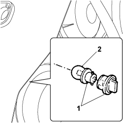

5540B28 BULB (ONE) FOR FRONT DIRECTION INDICATOR IN HEADLAMP, LEFT OR RIGHT - R.R.
- Path
- Procedures > 55 ELECTRICAL EQUIPMENT > 5540 EXTERIOR LIGHTING > 5540B headlamps > 5540B28 BULB (ONE) FOR FRONT DIRECTION INDICATOR IN HEADLAMP, LEFT OR RIGHT - R.R.
- Kind
- repair procedure (removal / refitting; the operation number is the code)
- Applies to
- engines: 1.4 8v, 1.6 16v, 1.3 JTD 16V, 1.9 JTD 8V; all production periods
- Interactive page
- https://sloeber94.github.io/elrnDB-fDbl/en/#/223000163
Applies to: engines: 1.4 8v, 1.6 16v, 1.3 JTD 16V, 1.9 JTD 8V; production: da 12/03; only with equipment: MY 2005
 Removing
Removing
 Refitting
Refitting- Turn the ignition key to the OFF position.
- Lift the bonnet
1. Rotate the bulb holder and extract it.
2. Remove the bulb from the bulb holder (bayonet fitting).

Applies to: engines: 1.4 8v, 1.6 16v, 1.3 JTD 16V, 1.9 JTD 8V; production: da 12/03; only with equipment: MY 2005
Refitting
Removing- Check the condition of the bulb and make sure it is clean; if necessary, replace it with a new one.
- Fit the bulb in the bulb holder (bayonet fitting) and fit the bulb holder.
- Check that the bulb is working.